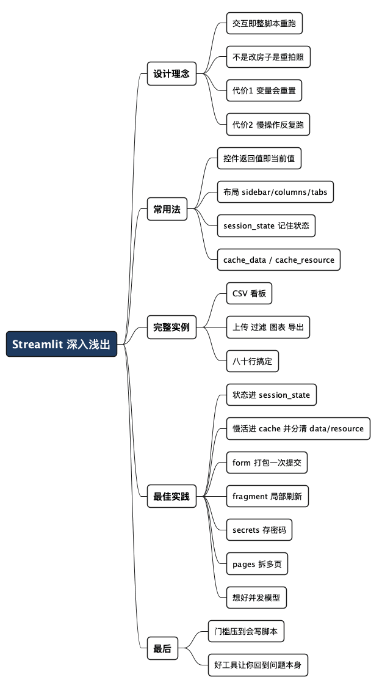

Streamlit 深入浅出：用写脚本的方式做数据应用
Posted on 日 05 7月 2026 in Tech
| Abstract | Streamlit 深入浅出：用写脚本的方式做数据应用 |
|---|---|
| Authors | Walter Fan |
| Category | Tech |
| Version | v1.0 |
| Updated | 2026-07-05 |
| License | CC-BY-NC-ND 4.0 |
Streamlit 深入浅出：用写脚本的方式做数据应用
做后端的人,大概都有过这种别扭时刻:手上有个 Python 脚本,跑出来一堆结果、几张图,想给同事看一眼,或者做个小工具让别人自己点点。可一旦要"做成网页",事情就变味了——前端框架、路由、打包、跨域、部署,一套下来,几十行的脚本能拖成一个星期的活。
我第一次用 Streamlit 是给一个服务做验收小工具。原本以为得写前端,结果翻文档半小时,几十行纯 Python 就跑出了一个带输入框、按钮、图表的页面。那一刻的感觉是:原来"给脚本套个界面"可以这么懒。
这篇想把 Streamlit 讲透一点:它为什么这么设计(理解这个,才不会被它的"怪脾气"绊倒)、怎么用、一个能跑的完整实例,以及我踩过坑后攒下的最佳实践。一句话立在前面:
Streamlit 不是让你"写网页",而是让你"写脚本,顺便有了网页"。
- 它适合:数据看板、内部工具、模型 demo、验收/调试小应用。
- 它不适合:面向公众的高并发产品、需要像素级定制 UI 的门户。
一、设计理念：整个脚本,从上到下,重跑一遍
Streamlit 最反直觉、也最核心的一点,你必须先记住:
每次用户有任何交互(点按钮、拖滑块、填输入框),Streamlit 都会把你整个 Python 脚本从第一行到最后一行,完完整整重新跑一遍。
传统前端是"事件驱动":你注册一个 onClick,点了就执行那个回调,页面其余部分不动。Streamlit 反过来——它是"脚本重跑"模型:没有回调网,没有组件树要你手动更新,状态变了就把整个脚本当成一个函数重新执行,页面自然长成脚本这次跑出来的样子。
打个比方:传统前端像"改房子"——哪面墙要动,你精确地砸哪面;Streamlit 像"重新拍一张照片"——场景变了,咔嚓再拍一张完整的,而不是在旧照片上修补。
这个设计的好处是心智负担极低:你写的就是一段自上而下的普通 Python,没有异步、没有状态同步的地狱。代价是两个你必须处理的问题,后面会细讲:
- 脚本反复重跑,变量每次都会重置——所以要"记住"东西,得用
st.session_state。 - 脚本反复重跑,慢操作(读数据库、加载模型)会被反复执行——所以要用
st.cache_data/st.cache_resource缓存。
理解了"重跑"这一条,Streamlit 的大部分"怪脾气"你都能预判。
二、常用法：控件、布局、状态、缓存
装它很简单,我习惯用 Poetry 管依赖:
poetry add streamlit
poetry run streamlit run app.py
（临时试用也可以 pip install streamlit 然后 streamlit run app.py。）
2.1 输入与输出控件
Streamlit 的控件都遵循一个朴素约定:函数的返回值,就是控件的当前值。
import streamlit as st
st.title("控件速览")
name = st.text_input("你的名字", "Walter") # 返回输入框里的字符串
age = st.slider("年龄", 0, 100, 30) # 返回滑块当前值
ok = st.checkbox("我同意") # 返回 True / False
city = st.selectbox("城市", ["合肥", "上海", "北京"])
if st.button("提交"): # 点了返回 True(仅本次重跑)
st.write(f"你好 {name},{age} 岁,来自 {city}")
st.success("提交成功") if ok else st.warning("请先勾选同意")
输出侧,st.write 是"瑞士军刀"——你丢给它字符串、DataFrame、图表、甚至 Matplotlib 图,它都能识别着显示。要精确控制,再用 st.dataframe、st.line_chart、st.json、st.metric 这些专用函数。
2.2 布局：侧边栏、分栏、标签页、折叠
import streamlit as st
st.sidebar.header("过滤条件") # 放进左侧边栏
threshold = st.sidebar.slider("阈值", 0, 100, 50)
col1, col2 = st.columns(2) # 并排两栏
col1.metric("今日订单", "1,204", "+8%")
col2.metric("失败率", "0.3%", "-0.1%")
tab_a, tab_b = st.tabs(["概览", "明细"]) # 标签页
with tab_a:
st.write("这里放概览")
with tab_b:
st.write("这里放明细表")
with st.expander("查看原始日志"): # 默认折叠,点开才显示
st.code("2026-07-05 INFO ...", language="log")
2.3 状态：用 session_state 记住东西
前面说过,脚本每次重跑,普通变量都会重置。要跨交互"记住"数据(登录态、计数器、上一步结果),就存进 st.session_state——它是一个在整个会话里活着的字典。
import streamlit as st
# 初始化(只在第一次进入时执行有效值)
if "count" not in st.session_state:
st.session_state.count = 0
st.write("当前计数:", st.session_state.count)
if st.button("加一"):
st.session_state.count += 1 # 改它,重跑后依然在
st.rerun() # 可选:立刻再跑一次刷新显示
没有 session_state,你就做不出"有记忆"的应用——这是 Streamlit 从入门到能用的分水岭。
2.4 缓存：别让慢操作反复跑
脚本反复重跑,意味着一个"读 50 万行 CSV"的函数会被跑很多次。用缓存装饰器把结果存下来:
import streamlit as st
import pandas as pd
@st.cache_data # 缓存"数据":同样的入参,只算一次
def load_data(path):
return pd.read_csv(path)
@st.cache_resource # 缓存"资源":数据库连接、模型这类全局单例
def get_model():
from sklearn.linear_model import LinearRegression
return LinearRegression()
df = load_data("sales.csv") # 第一次读盘,之后秒回
一句话记住两者的区别:
| 装饰器 | 缓存什么 | 典型用途 | 返回值特性 |
|---|---|---|---|
st.cache_data |
数据(DataFrame、计算结果) | 读文件、跑查询、做计算 | 每次返回副本,改了不互相影响 |
st.cache_resource |
资源(连接、模型、客户端) | 数据库连接、加载大模型 | 返回同一个全局对象 |
选错会出微妙的 bug:用 cache_data 缓存数据库连接,你会得到一堆连接副本;用 cache_resource 缓存 DataFrame,多个用户会改到同一份数据。数据用 cache_data,连接/模型用 cache_resource,记这一条基本不会错。
三、一个能跑的完整实例：CSV 数据看板
把上面的东西串起来,做一个"上传 CSV → 过滤 → 看图看表"的小看板。这段我在 Streamlit 1.58 上实测跑通:
# dashboard.py —— 运行: poetry run streamlit run dashboard.py
import streamlit as st
import pandas as pd
import numpy as np
st.set_page_config(page_title="销售看板", layout="wide")
st.title("📊 销售数据看板")
@st.cache_data
def load(file):
return pd.read_csv(file)
# 没上传就造一份示例数据,保证读者不用准备文件也能跑
file = st.sidebar.file_uploader("上传 CSV", type="csv")
if file:
df = load(file)
else:
st.info("未上传文件,使用示例数据")
df = pd.DataFrame({
"城市": np.random.choice(["合肥", "上海", "北京"], 200),
"销量": np.random.randint(50, 500, 200),
})
# 侧边栏过滤
cities = st.sidebar.multiselect("城市", df["城市"].unique(), df["城市"].unique())
view = df[df["城市"].isin(cities)]
# 顶部指标
c1, c2, c3 = st.columns(3)
c1.metric("记录数", len(view))
c2.metric("总销量", int(view["销量"].sum()))
c3.metric("平均销量", round(view["销量"].mean(), 1))
# 图 + 表两个标签页
tab1, tab2 = st.tabs(["按城市汇总", "明细数据"])
with tab1:
st.bar_chart(view.groupby("城市")["销量"].sum())
with tab2:
st.dataframe(view, use_container_width=True)
st.download_button("下载筛选结果", view.to_csv(index=False), "filtered.csv")
八十行不到,你就有了一个能上传、能过滤、能看图看表、还能导出结果的看板。要是用传统前端,光是文件上传 + 图表联动就够写一天了。
四、最佳实践：我踩坑后攒下的几条
Streamlit 上手容易,但写着写着容易乱。下面几条是我自己反复吃过亏后的总结。
-
想清楚"哪些状态要活过重跑"。 凡是要跨交互保留的东西(登录态、累积结果、用户选择),第一时间放进
st.session_state;其余临时变量随它每次重置。分不清这个,应用就会"点一下忘一下"。 -
慢操作一律上缓存,并想清楚 data 还是 resource。 读文件、跑查询、拉接口用
st.cache_data;数据库连接、加载模型用st.cache_resource。缓存是 Streamlit 性能的命门,不加缓存的看板会卡到没法用。 -
用
st.form把"多个输入 + 一次提交"打包。 默认情况下,你动任何一个控件都会触发整页重跑;把一组输入放进st.form,只有点了st.form_submit_button才提交一次,避免每敲一个字就重算。
with st.form("filter"):
kw = st.text_input("关键词")
n = st.slider("数量", 1, 100, 10)
if st.form_submit_button("查询"): # 只有这一下才触发
st.write(f"查询 {kw},取 {n} 条")
-
局部刷新用
st.fragment,别动不动整页重跑。 新版 Streamlit 支持用@st.fragment装饰一个函数,让它只重跑自己那一块。做实时刷新的小组件(比如每秒更新的监控数字)时,这能省掉整页重算的开销。 -
秘密走
st.secrets,别硬编码。 密码、API key、数据库地址放进.streamlit/secrets.toml,代码里用st.secrets["db"]["password"]读,别写死在源码里、更别提交进 Git。 -
一个脚本只干一件事,多页面用
pages/。 别把一个app.py堆成上帝文件。Streamlit 原生支持多页:建一个pages/目录,每个.py自动变成一个页面,侧边栏自动生成导航。 -
部署前想好并发模型。 Streamlit 每个会话是独立的脚本运行,重计算全靠缓存兜底。它天生不是为高并发公网产品设计的;内部工具、几十个人用,它绰绰有余,真要扛大流量,该上正经 Web 框架了。
一句话:
顺着"脚本重跑"的脾气写(状态进 session_state,慢活进 cache),Streamlit 就是神器;逆着它写,你会觉得处处别扭。
最后一句
Streamlit 的聪明之处,不在于它功能多强,而在于它把"做个数据应用"这件事的门槛,压到了"会写 Python 脚本"这么低。它替你把前端那摊子事全兜住了,让你把精力放回真正重要的地方——你的数据、你的逻辑、你想让别人看到什么。
工具的最高境界,是让你忘记工具本身的存在。写 Streamlit 写顺了,你会发现自己想的不再是"这个按钮怎么绑事件",而是"我到底想给用户看什么"——能让你回到问题本身的工具,才是好工具。
全文思维导图
@startmindmap
<style>
mindmapDiagram {
node {
BackgroundColor #F8F9FA
RoundCorner 10
Padding 10
FontSize 13
}
:depth(0) {
BackgroundColor #1E3A5F
FontColor white
FontSize 18
FontStyle bold
}
:depth(1) {
FontSize 15
FontStyle bold
}
:depth(2) {
FontSize 13
}
}
</style>
* Streamlit 深入浅出
** 设计理念
*** 交互即整脚本重跑
*** 不是改房子是重拍照
*** 代价1 变量会重置
*** 代价2 慢操作反复跑
** 常用法
*** 控件返回值即当前值
*** 布局 sidebar/columns/tabs
*** session_state 记住状态
*** cache_data / cache_resource
** 完整实例
*** CSV 看板
*** 上传 过滤 图表 导出
*** 八十行搞定
** 最佳实践
*** 状态进 session_state
*** 慢活进 cache 并分清 data/resource
*** form 打包一次提交
*** fragment 局部刷新
*** secrets 存密码
*** pages 拆多页
*** 想好并发模型
** 最后
*** 门槛压到会写脚本
*** 好工具让你回到问题本身
@endmindmap

本作品采用知识共享署名-非商业性使用-禁止演绎 4.0 国际许可协议进行许可。 欢迎在我的个人网站 https://www.fanyamin.com 访问原文并评论。